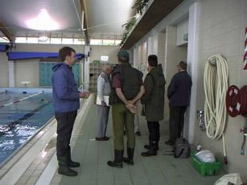
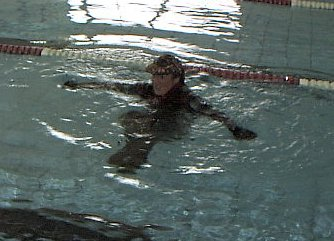
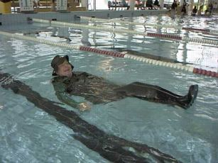
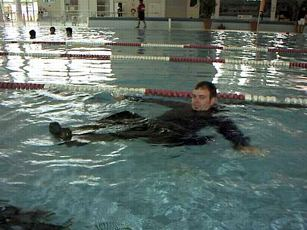

釣行日誌 ＮＺ編
AFACの ウェーダー・コース（Wader Course ）体験記
1999/11/21（SUN） オークランド市郊外のパパトエトエ市民プールにて
オークランド・フレッシュウォーター・アングラーズ・クラブ（AFAC）のウェーダー・コース（ウェーダー完全装備での緊急水泳訓練）に参加してきましたので、ご報告します。
プール前に着くと、４ＷＤのそばでそれらしい人たちが数人立ち話をしている。カーターさんと古参メンバーのデーブさんらである。カーターさんは見たところ年齢は60歳ぐらい、けっこうなお歳に見えるがまだまだ元気いっぱいである。カーターさんが、今日のゲストである医師のマッケイ氏を紹介してくれる。マッケイ医師は、先日釣具店でフライを買ったところ、一本2.50ドルもしたそうで、こんなに高くてはおちおち釣りを楽しめないよとぼやいている。するとカーターさんが、
「フライは自分で巻かないと高くつくぞ。おまけにだ、例えばブッシュの下に潜むブラウンを狙う時にだナ、これを失敗してフライを無くしたら２ドル50セント、次に替えるフライは２ドル80セントとか考え出したらおちおちキャストもできなくなるからな。」
「うーん、まったくそのとおりですね」
「このごろは釣りも高い遊びになったよ。わしの兄はイギリスに住んでおるんだが、コイ釣りのライセンスが一日15ポンド、マス釣りに至っては一日45ポンドもすると来たもんだ。おまけにコイ釣りに使う15ftとやらのロッドはン百ポンドもするって話だ。やれやれ」
などと釣り談義をしていると、集合時間になったので、おのおのウェーダー一式を持ってプールに向かう。今日は、オークランドフレッシュウォーターアングラーズクラブ主催の「ウェーダーコース」がカーターさんの指導で開催されるのだ。これは何かというとウェーダー・ベスト・ジャケット・帽子など釣りの身支度一式を身につけた上でプールに落とされ、緊急時の対処法を学ぶと言うものである。近年では、衣服を付けたままでの水泳訓練とかが行われるようになっているが、そのフィッシングバージョンである。
プールの設備は新しく、更衣室の中もきれいであった。久しぶりにウェーダーを取り出し、ずるずると履き上げ、シューズの紐を締めるとなかなか気合いが入る。（笑） 今年の４月に早春の岩魚釣りを楽しんで以来である。更衣室から出てプールサイドに集合すると、本日の参加者はカーターさん、クラブの会長マイク・バッティー氏、クラブの秘書のバージニアさんと旦那さん、デーブさん、マッケイ医師、そして他のメンバーなど14人ほどである。
「おっ？ なんだそのウェーダーは？ いやに薄いじゃないか？」
などと鋭い視線が私のウェーダーに集まる。こちらでは透湿性素材のウェーダー（ソックスタイプ＋ウェーディングシューズ）はあまりポピュラーではないらしく、歩きやすそうだなとか値段はいくらぐらいするのかなどとひとしきり質問責めにあった。

さて、カーターさんを囲んでのガイダンスが始まる。まず、マッケイ医師から釣りにおける健康上の留意点、緊急時の一般的な心構えなどが解説された。釣りで転倒、転落の際に起こる身体が濡れた状況下での低体温症、及び登山などで起こる乾燥した状況下での低体温症との違い、おのおのの応急処置法、そして、高齢者や心臓・循環器系統に不安がある人は、釣行時の激しい運動が突発的な発作の引き金になることがあるので注意すること、などの説明があった。
タウポやロトルアでは、寒さの厳しい冬季に湖から遡上するレインボートラウトを狙って、長時間のウェーディングが必要とされるので、このようなガイダンスは特に重要なものであることがわかる。寒い時期でのウェーディングの際には、
防寒性能の高いシステマチックな重ね着をすること
頭部からは多量の体熱が失われるので帽子を着用のこと
栄養のある食事を事前に摂って空腹状態で釣りをしないこと
前日の仕事などで疲れている際には釣りをしないこと
などを注意するようにとのことであった。
さて、いよいよカーターさんの説明が始まった。最初は水の冷たい屋外プールで行うはずだったのだが、折からの驟雨で急遽、屋内プールへと移動した。こちらは温水なのでうれしい限りである。指示された内容を箇条書きにまとめてみると次のようになる。
○まず、釣りをするからには、
いつかは必ず転んだり、流されたりして水中に落ちることを肝に銘じる
ことがまず第一に必要である。誰も安全が保証された釣り人はいないこと。あなたも明日、ウェーダーを履いたまま急流に流されたり湖の砂底に足を取られて動けなくなることがあることを覚悟せよ！とのこと。
○渡渉、ウェーディングの前には、
ジャケット・雨具のジッパー、ボタンなどは必ず閉めておく。
これは、流れによって服がはだけたり、まくり上げられて両腕を動かすことができなくなるからだそうである。
○転倒、水没した瞬間には、
口を閉じ、眼を開ける
これは、口を開けていると当然ながら水を飲み、その反射作用で体が自然にせき込んで水をゲホゲホと吐き出そうとする。さらにその反動でまた大量の水を飲んでしまうことによる。このような状況だと数秒から10秒程度で対処能力を失ってしまうので、なにはともあれ口を閉じて水を飲まないようにすることが大事だそうである。
決して泳ごうともがかない、あくまで静かに浮くことを試みる
膝を引きつけ、頭が上になるようにバランスをとる
両腕を大きく広げ、左右のバランスをとる
○下流へと流されていく間には、
頭を上流に向け、仰向けの体勢で落ち着いて流される
尻や背中が浅瀬の川底に着くまで静かに流される
余力があれば、両手で漕ぐといくぶん進む
○その他の注意事項
一人では釣行しない。原則として二人以上、出来れば三人が望ましい
砂地、岩の隙間に足を取られたら、助けを求める。
助けがいないときは、ウェーダーを切って脱ぎ捨てることも考える。そのために、良く切れるナイフを腰に付けておく
湖における河川の流入部、入り江は危険個所である。
と、以上のような注意事項を頭に叩き込まれた後、いよいよプールに叩き込まれる時間となった。
「さぁーてと、誰が最初だ？」
と、カーターさんの視線がこちらを向いたのですかさず、かつ、さりげなくカメラを取り出しに脇へあとずさる。結局名誉ある一番手はダンカン夫人ということになり、有無を言わさずプールへドボンと突き落とされる。なにもいきなり落とさなくても......と思ったが、実際のアクシデントでは足が滑ったりして突然転倒することになるのでしごくもっともな訓練ではある。ダンカン夫人は、
「Ahaa!」
などと叫びつつ落下してしばらくバシャバシャともがいていたが、ようやく浮くコツをつかんだようで、指示された通り、膝を引きつけてプカプカと浮いている。慣れると手で水をかくことによりそれなりに推進できるようである。

その後、いかつい男性数人が突き落とされたのち、いよいよ私の番となった。カメラを袋に収めてプールサイドに立つと、予想したタイミングよりも早くいきなりカーターさんが体を押したのでやや狼狽しつつ水中に落下する。最初のドボン→ブクブク.....を、口を閉じてこらえていると大げさにウェーダーなどを着込んだ割には軽やかにフワリと水面に浮くことが出来た。ウェストベルトを締めているのでウェーダーの中に急速に浸水することはなく、脚部が著しく浮き過ぎて上半身が沈むこともない。さらに膝を引きつけるとたしかに上半身が浮きやすくなることが実感できた。
で、とりあえず浮きながら今度はプールサイドまで移動しようと思い、逆バタフライのように両腕で水をかき、背中の方に進みはじめると、カーターさんが、
「おーい、前へ進め！ 前へ！」

と大きな声で注意してくれる。これは、後ろに進んで（流されて）行くと、岩などに頭をぶつけて気を失って危険だからだそうである。ところが、仰向けに浮いた状態で前方＝足の方へ進むのはなかなか難しい。それでもなんとかプールサイドまでたどり着いた。するとカーターさんが、
「足を伸ばしてプールサイドと平行にして、体をぐいっとコジ上げて登ると楽だ」
と教えてくれる。しかし、ズブ濡れの身体と衣類の重みは想像以上であり、わずか水面から10cmほど高いだけのプールサイドによじ登るのは大変な労力を要することがわかった。これでは、とても流れの途中にある岩などによじ登るのは不可能だなと実感した。浅瀬まで流されて足が立つところまで行かなければどうにもならないだろう。いたずらによじ登ることで体力を消耗し、再度水中に落ちる羽目になる可能性が強いと思われた。
「浅瀬まで流されて」と、書くのは簡単だが、ニュージーランドの大きな川の場合、一つの瀬と次の瀬との距離は数百メートルも離れており、うまく浅瀬に到達するまでにはかなり下流まで流されてしまうことになる。これは何を意味するかというと、友人やガイドさんの助けは期待できず、あくまで自分の力で浅瀬で立ち上がり、岸までたどり着かなければならないことになる。
また、これは意外だったのだが、レインジャケットを着た状態で水没したため、およそ３リットルぐらいはあろうかという水が胸部から両方の袖口へ浸入し、腕を動かすのがものすごく疲れるのである。あわてて袖口のベルクロを緩めて排水させる。同様に、衣類やウェーダーに蓄えられた水の重みも水中では全く感じないのだが、プールから出た途端、まるで重力が３倍増しになったかのように身体にのしかかってくる。
また、水から上がると急に寒気を感じたので、実際の現場、冬のタウポや夏でも山岳渓流などでは、すぐに全部脱ぎ捨てて乾いた衣類に着替えなければ急速に体温を失ってしまうことであろう。クワバラくわばら。
その後、日曜日のプールを楽しむ子供達の驚異と好奇心に満ちあふれた視線や嘲笑を受けながら、何度も体験してコツをつかむために、延べ４回ほど転落を繰り返し、ドボドボになるまで緊急水泳訓練を楽しんだ。
他のメンバーも思い思いに転落を繰り返し、グブグブ、ザブザブと浮きながらの推進や方向転換に励んでいた。

30分ほどでコースが終わり、更衣室で着替えたみんなは口々に、
「いやぁ、いい経験になった」
とか、
「本番は体験したくないなぁ」
とか話していた。カーターさんも、
「どうだい、タメになっただろう？」
と、にこやかに笑いながら駐車場へと去っていった。
いやぁ、本当にいい経験になったなぁ......。今度からはいつでも防水袋に入れた着替えとバスタオルは欠かせないなどと思いつつ、さて、身体を拭いて着替えるか、とあたりを見回したところ、なんと替えのズボンを忘れたことに気づいた。というか、本来ズボンを脱いでからウェーダーを履くべきだったのだが、あわてて実際の釣りのようにズボンの上にウェーダーを履いていたため、あわれリーバイスのコーデュロイはずぶ濡れになってしまったのであった。
「いやぁ、マズイことになったぞ.......」
脳裏には、打開策として以下の案がすばやく浮かんだ。
１．腰にバスタオルを巻いて路線バスに乗る。（羞恥・危険大）
２．ウェーダーを履いて釣りの帰途を装って路線バスに乗る。（羞恥大）
３．タクシーを呼んで家まで帰る。（費用大）
結局、ジーンズをぎゅうぎゅうと絞り上げ、バスタオルで拭いてなんとか帰ることにした。駐車場まで出ると、いっしょに水没したリーさんが車に乗せてくれると言ったので、お言葉に甘えて送ってもらうことにした。
いろんな体験をした一日であった。
釣行日誌ＮＺ編 目次へ
サイトマップ
ホームへ
お問い合わせ